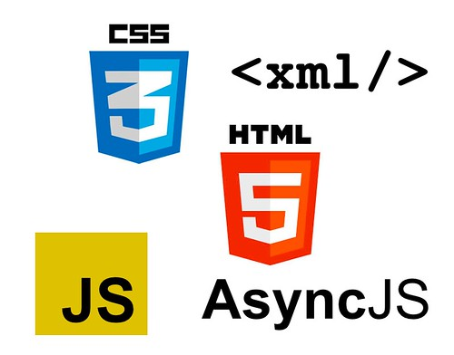

The Responsibility of the Writer
A blog post highlighting the ever-dwindling line between fact and fiction. Can we write the future using the fictional stories of today?
Social Media Standards for Men and Women
A podcast detailing our ENGL 3844 discussion group's perspectives on the different social media stanards for guys and girls. We invite several other students from Virginia Tech to voice their opinion on the matter.

YouTube Video
Soon to be a video from ENGL 3844.
Outside Resource
Soon to be an outside resource from ENGL 3844.